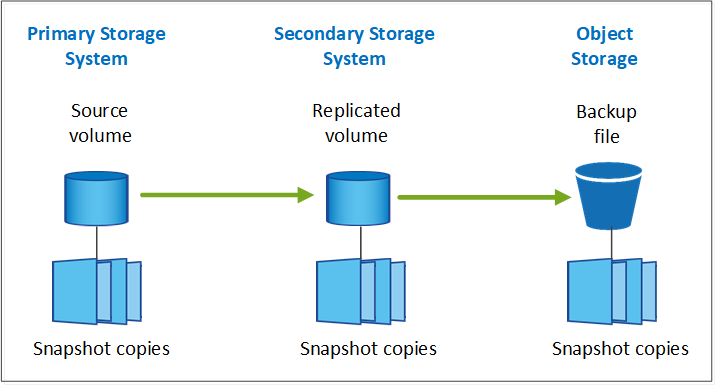
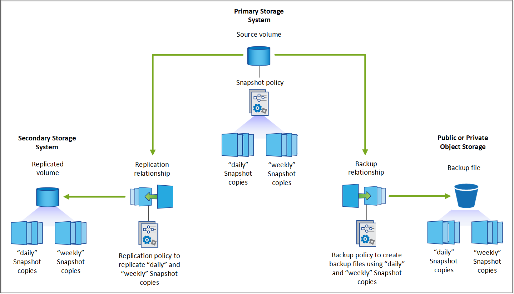
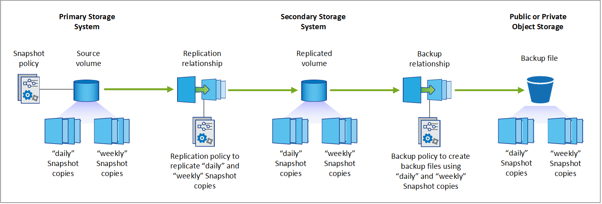

Release notes
Release notes
Plan your protection journey
 Suggest changes
Suggest changes
The BlueXP backup and recovery service enables you to create up to three copies of your source volumes to protect your data. There are many options that you can select when enabling this service on your volumes, so you should review your choices so you're prepared.
We'll go over the following options:
-
Which protection features will you use: Snapshot copies, replicated volumes, and/or backup to cloud
-
Which backup architecture will you use: a cascade or fan-out backup of your volumes
-
Will you use the default backup policies, or do you need to create custom policies
-
Do you want the service to create the cloud buckets for you, or do you want to make your object storage containers before you begin
-
Which BlueXP Connector deployment mode are you using (standard, restricted, or private mode)
Which protection features will you use
Before you select the features you'll use, here's a quick explanation of what each features does, and what type of protection it provides.
| Backup type | Description |
|---|---|
Snapshot |
Creates a read-only, point-in-time image of a volume within the source volume as a Snapshot copy. You can use the Snapshot copy to recover individual files, or to restore the entire contents of a volume. |
Replication |
Creates a secondary copy of your data on another ONTAP storage system and continually updates the secondary data. Your data is kept current and remains available whenever you need it. |
Cloud backup |
Creates backups of your data to the cloud for protection and for long-term archival purposes. If necessary, you can restore a volume, folder, or individual files from the backup to the same, or different, working environment. |
Snapshots are the basis of all the backup methods, and they are required to use the backup and recovery service. A Snapshot copy is a read-only, point-in-time image of a volume. The image consumes minimal storage space and incurs negligible performance overhead because it records only changes to files since the last Snapshot copy was made. The Snapshot copy that is created on your volume is used to keep the replicated volume and backup file synchronized with changes made to the source volume - as shown in the figure.

You can choose to create both replicated volumes on another ONTAP storage system and backup files in the cloud. Or you can choose just to create replicated volumes or backup files - it's your choice.
To summarize, these are the valid protection flows you can create for volumes in your ONTAP working environment:
-
Source volume → Snapshot copy → Replicated volume → Backup file
-
Source volume → Snapshot copy → Backup file
-
Source volume → Snapshot copy → Replicated volume

|
The initial creation of a replicated volume or backup file includes a full copy of the source data — this is called a baseline transfer. Subsequent transfers contain only differential copies of the source data (the Snapshot). |
Comparison of the different backup methods
The following table shows a generalized comparison of the three backup methods. While object storage space is typically less expensive than your on-premises disk storage, if you think you might restore data from the cloud frequently, then the egress fees from cloud providers can reduce some of your savings. You'll need to identify how often you need to restore data from the backup files in the cloud.
In addition to this criteria, cloud storage offers additional security options if you use the DataLock and Ransomware Protection feature, and additional cost savings by selecting archival storage classes for older backup files. Learn more about DataLock and Ransomware protection and archival storage settings.
| Backup type | Backup speed | Backup cost | Restore speed | Restore cost |
|---|---|---|---|---|
Snapshot |
High |
Low (disk space) |
High |
Low |
Replication |
Medium |
Medium (disk space) |
Medium |
Medium (network) |
Cloud backup |
Low |
Low (object space) |
Low |
High (provider fees) |
Which backup architecture will you use
When creating both replicated volumes and backup files, you can choose a fan-out or cascade architecture to back up your volumes.
A fan-out architecture transfers the Snapshot copy independently to both the destination storage system and the backup object in the cloud.

A cascade architecture transfers the Snapshot copy to the destination storage system first, and then that system transfers the copy to the backup object in the cloud.

Comparison of the different architecture choices
This table provides a comparison of the fan-out and cascade architectures.
| Fan-out | Cascade |
|---|---|
Small performance impact on the source system because it is sending Snapshot copies to 2 distinct systems |
Less effect on the performance of the source storage system because it sends the Snapshot copy only once |
Easier to set up because all policies, networking, and ONTAP configurations are done on the source system |
Requires some networking and ONTAP configuration to be done from the secondary system as well. |
Will you use the default backup policies for Snapshot copies, replications, and backups
You can use the default policies provided by NetApp to create your backups, or you can create custom policies. When you use the activation wizard to enable the backup and recovery service for your volumes, you can select from the default policies and any other policies that already exist in the working environment (Cloud Volumes ONTAP or on-premises ONTAP system). If you want to use a policy different than those existing policies, you can create the policy before starting or while using the activation wizard.
-
The default Snapshot policy creates hourly, daily, and weekly Snapshot copies, retaining 6 hourly, 2 daily, and 2 weekly Snapshot copies.
-
The default replication policy replicates daily and weekly Snapshot copies, retaining 7 daily and 52 weekly Snapshot copies.
-
The default backup policy replicates daily and weekly Snapshot copies, retaining 7 daily and 52 weekly Snapshot copies.
If you create custom policies for replication or backup, the policy labels (for example, "daily" or "weekly") must match the labels that exist in your Snapshot policies or replicated volumes and backup files won't be created.
You can create custom policies using BlueXP backup recovery, System Manager, or the ONTAP Command Line Interface (CLI).
Create a Snapshot policy using System Manager
Create a Snapshot policy using the ONTAP CLI
Create a replication policy using System Manager
Create a replication policy using the ONTAP CLI
Create a backup policy using System Manager
Create a backup policy using the ONTAP CLI
Note: When using System Manager, select Asynchronous as the policy type for replication policies, and select Asynchronous and Back up to cloud for backup to object policies.
You can create Snapshot, replication, and backup to object storage policies in the BlueXP backup and recovery UI. See the section for adding a new backup policy for details.
Here are a few sample ONTAP CLI commands that may be helpful if you are creating custom policies. Note that you must use the admin vserver (storage VM) as the <vserver_name> in these commands.
| Policy Description | Command |
|---|---|
Simple Snapshot policy |
|
Simple backup to cloud |
|
Backup to cloud with DataLock and Ransomware protection |
|
Backup to cloud with archival storage class |
|
Simple replication to another storage system |
|
|
|
Only vault policies can be used for backup to cloud relationships. |
Where do my policies reside?
Backup policies reside in different locations depending on the backup architecture you plan to use: Fan-out or Cascading. Replication policies and Backup policies are not designed the same way because replications pair two ONTAP storage systems and backup to object uses a storage provider as the destination.
Snapshot policies always reside on the primary storage system.
Replication policies always reside on the secondary storage system.
Backup to object policies are created on the system where the source volume resides - this is the primary cluster for fan-out configurations, and the secondary cluster for cascading configurations.
These differences are shown in the table.
| Architecture | Snapshot policy | Replication policy | Backup policy |
|---|---|---|---|
Fan-out |
Primary |
Secondary |
Primary |
Cascade |
Primary |
Secondary |
Secondary |
So if you're planning to create custom policies when using the cascading architecture, you'll need to create the replication and backup to object policies on the secondary system where the replicated volumes will be created. If you're planning to create custom policies when using the fan-out architecture, you'll need to create the replication policies on the secondary system where the replicated volumes will be created and backup to object policies on the primary system.
If you're using the default policies that exist on all ONTAP systems, then you're all set.
Do you want to create your own object storage container
When you create backup files in object storage for a working environment, by default, the backup and recovery service creates the container (bucket or storage account) for the backup files in the object storage account that you have configured. The AWS or GCP bucket is named "netapp-backup-<uuid>" by default. The Azure Blob storage account is named "netappbackup<uuid>".
You can create the container yourself in the object provider account if you want to use a certain prefix or assign special properties. If you want to create your own container, you must create it before starting the activation wizard. The container must be used exclusively for storing ONTAP volume backup files - it cannot be used for any other purpose. The backup activation wizard will automatically discover your provisioned containers for the selected Account and credentials so that you can select the one you want to use.
You can create the bucket from BlueXP, or from your cloud provider.
Note: At this time you cannot use your own S3 buckets when creating backups in StorageGRID systems or to ONTAP S3.
If you plan to use a different bucket prefix than "netapp-backup-xxxxxx", then you'll need to modify the S3 permissions for the Connector IAM Role. See the topics for creating backups to AWS S3 for details.
Advanced bucket settings
If you plan to move older backup files to archival storage, or if you plan to enable DataLock and Ransomware protection to lock your backup files and scan them for possible ransomware, you'll need to create the container with certain configuration settings:
-
Archival storage on your own buckets is supported in AWS S3 storage at this time when using ONTAP 9.10.1 or greater software on your clusters. By default, backups start in the S3 Standard storage class. Ensure that you create the bucket with the appropriate lifecycle rules:
-
Move the objects in the entire scope of the bucket to S3 Standard-IA after 30 days.
-
Move the objects with the tag "smc_push_to_archive: true” to Glacier Flexible Retrieval (formerly S3 Glacier)
-
-
DataLock and Ransomware protection is supported in AWS storage when using ONTAP 9.11.1 or greater software on your clusters, and Azure storage when using ONTAP 9.12.1 or greater software.
-
For AWS, you must enable Object Locking on the bucket using a 30-day retention period.
-
For Azure, you need to create the Storage Class with version-level immutability support.
-
Which BlueXP Connector deployment mode are you using
If you're already using BlueXP to manage your storage, then a BlueXP Connector has already been installed. If you plan to use the same Connector with BlueXP backup and recovery, then you're all set. If you need to use a different Connector, you'll need to install it before starting your backup and recovery implementation.
BlueXP offers multiple deployment modes that enable you to use BlueXP in a way that meets your business and security requirements. Standard mode leverages the BlueXP SaaS layer to provide full functionality, while restricted mode and private mode are available for organizations that have connectivity restrictions.
Support for sites with full internet connectivity
When BlueXP backup and recovery is used in a site with full internet connectivity (also known as "standard mode" or "SaaS mode"), you can create replicated volumes on any on-premises ONTAP or Cloud Volumes ONTAP systems managed by BlueXP, and you can create backup files on object storage in any of the supported cloud providers. See the full list of supported backup destinations.
See the backup topic for the cloud provider where you plan to create backup files for the list of valid Connector locations. There are some restrictions where the Connector must be installed manually on a Linux machine or deployed in a specific cloud provider.
Support for sites with limited internet connectivity
BlueXP backup and recovery can be used in a site with limited internet connectivity (also known as "restricted mode") to back up volume data. In this case, you'll need to deploy the BlueXP Connector in the restricted region.
-
You can back up data from Cloud Volumes ONTAP systems installed in AWS commercial regions to Amazon S3. See how to Back up Cloud Volumes ONTAP data to Amazon S3.
-
You can back up data from Cloud Volumes ONTAP systems installed in Azure commercial regions to Azure Blob. See how to Back up Cloud Volumes ONTAP data to Azure Blob.
Support for sites with no internet connectivity
BlueXP backup and recovery can be used in a site with no internet connectivity (also known as "private mode" or "dark" sites) to back up volume data. In this case, you'll need to deploy the BlueXP Connector on a Linux host in the same site.
-
You can back up data from local on-premises ONTAP systems to local NetApp StorageGRID systems. See how to Back up on-premises ONTAP data to StorageGRID for details.
-
You can back up data from local on-premises ONTAP systems to local on-premises ONTAP systems or Cloud Volumes ONTAP systems configured for S3 object storage. See how to Back up on-premises ONTAP data to ONTAP S3 for details.